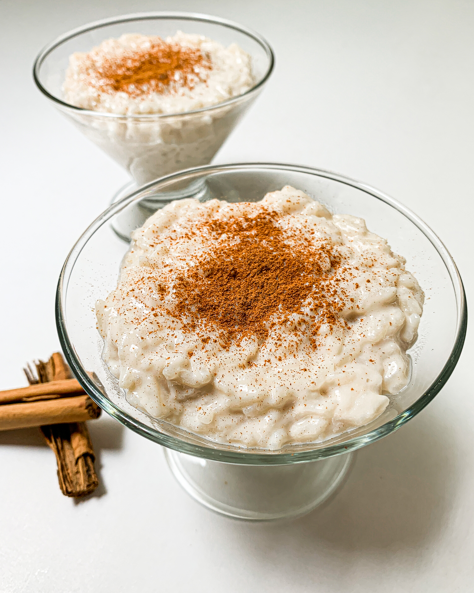

Spanish style Rice Pudding (Arroz con leche)

Description:
Here we are gonna show you how to make the best rice pudding in our personal opinion, the spanish way, the biggest
difference with other ones is how the milk is aromatize.
The rice pudding or how we spanish call it: "Arroz con leche"(literally means: "Rice with milk")
is a super simple recipe, lets dive into it! :
How to make the best Rice pudding in the traditional spanish way:
Ingredients:
- 500ml of Whole milk.
- 300g of Risotto rice or the smallest grain rice you have.
- 125g of White sugar.
- 2 Cinnamon sticks.
- 1 or 2 Lemon peels.
And that's all we need!, without further ado let's get into the actual preparing!
Steps:
- Take a sauce pan and add the milk, the sugar,
the cinnamon and the lemon peels.
- Wash the rice with running water to get rid of the starch or most of it.
- Add the rice to the pan and heat all up at low fire (Make sure you stir it frequently to don't burn the milk on the bottom).
- Let the mixture boil for a good amount of time (Remember to stir every 4-5 minutes) until
it reduce to de desire level of creaminess (Normally mine one is around 40mins).
- When ready just separate in portions and let it cool down to room temperature.
(Some people like to remove now the lemon peels, some people like to eat it with them, you need to decide now and remove them if so)
- Grate some of the cinnamon on top and place in the fridge to chill.
- Grab a spoon and enjoy!